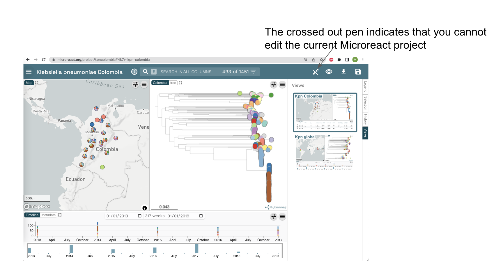
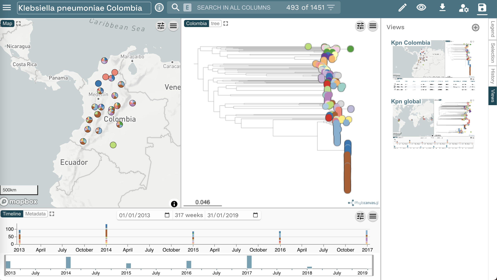
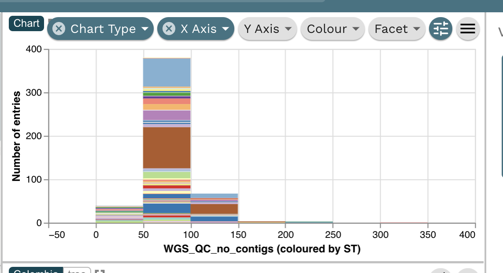
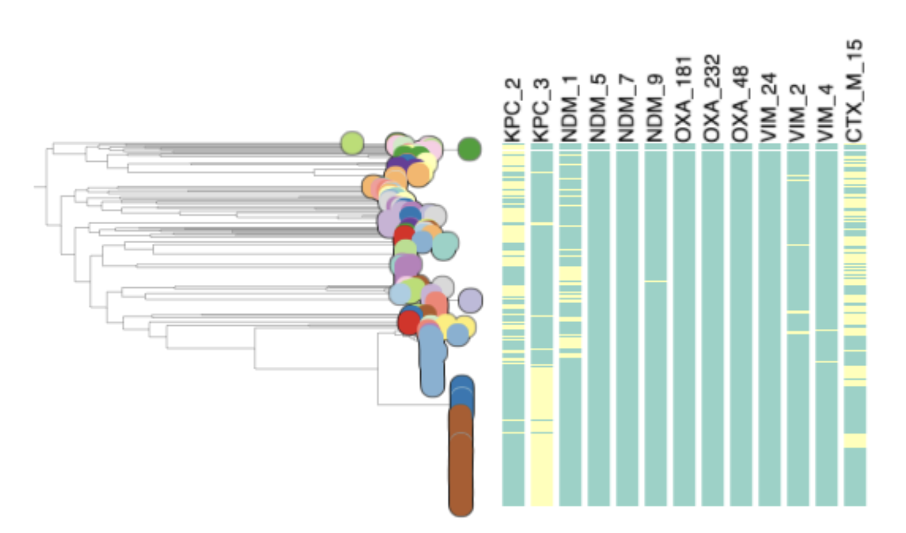
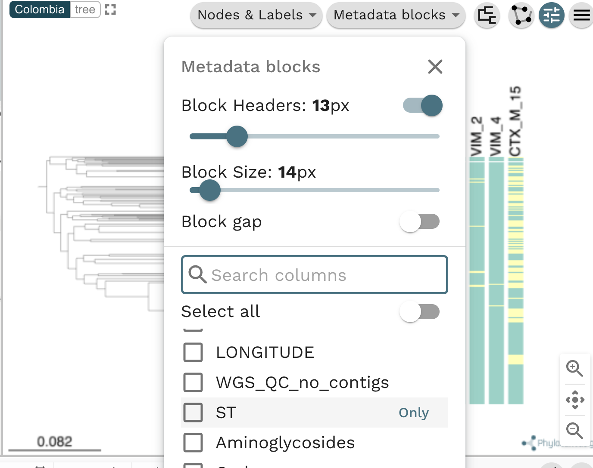

Microreact tutorial
For Microreact documentation, go to https://docs.microreact.org/
Required internet browsers: Google Chrome or Mozilla Firefox
In this series of exercises, you will use Microreact to gain knowledge regarding a large collection of Klebsiella pneumoniae isolates, sampled from Colombia, between 2013 and 2019. At the end of this series of exercises, you will be able to identify a high risk clone circulating in the country.
Go to www.microreact.org/project/kpncolombia and explore the collection of isolates.
Task 1: Create an editable project.
Task 2: Present whole genome sequencing quality control (WGS QC) statistics in a chart.
Task 3: What are the dominating sequence types (STs) in Colombia?
Task 4: Plot metadata blocks for the carbapenamase genes CTX-M-15, NDM-1, KPC and OXA. What are the prevalent AMR mechanisms detected ?
Task 5: Which STs are associated with the presence of carbapenamase genes?

Task 1: Create an editable project.




Task 2: Present whole genome sequencing quality control (WGS QC) statistics in a chart.



Task 3: What are the dominating sequence types (STs) in Colombia?


Task 4: Plot metadata blocks for the carbapenamase genes CTX-M-15, NDM-1, KPC and OXA. What are the prevalent AMR mechanisms detected ?



Task 5: Which STs are associated with the presence of carbapenamase genes?
